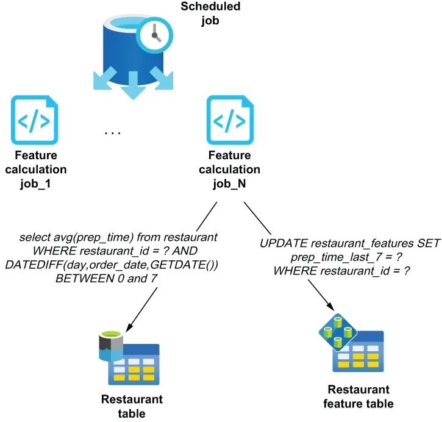

Typically, features are associated with an entity type (restaurant, driver, customer, etc.) because each feature represents a “has a(n)” relationship with each particular entity—for instance, a restaurant has an average meal preparation time of 23 minutes, or a driver has an average customer review of 4.3 stars. The feature store is then populated via an ancillary process that precomputes the various features, such as the average meal prep time for the last seven days for every restaurant or the average delivery time in the city for the last hour.
通常，特征都是与某个实体类型（餐厅、司机、客户等等）相关联的，因为每个特征都代表着与某个特定实体之间的一种"拥有（has a(n)）"关系——例如，某家餐厅拥有的平均备餐时间是 23 分钟，或者某位司机拥有的平均客户评价是 4.3 星。随后，特征存储由一个辅助流程来填充：该流程预先计算出各种特征，例如每家餐厅过去七天的平均备餐时间，或者本城市过去一小时的平均送达时间。
These processes need to be scheduled to run periodically to cache the results in the feature store and ensure that these features can be retrieved with sub-second response times when the order arrives. A batch-oriented processing engine is best suited for performing the pre-calculation of the features, as it can process a large volume of data efficiently. For instance, a distributed query engine, such as Apache Hive or Spark, can execute multiple concurrent queries against a large dataset stored on HDFS, using standard SQL syntax, as shown in figure 11.4. These jobs can asynchronously compute the average meal prep time for all restaurants over a specific period of time and can be scheduled to run hourly to keep these features up to date.
这些流程需要被安排为周期性运行，以便把结果缓存进特征存储，并确保在订单到达时能够以亚秒级的响应时间取回这些特征。一个面向批处理的处理引擎最适合用来执行这些特征的预计算，因为它能高效地处理大批量数据。举例来说，像 Apache Hive 或 Spark 这样的分布式查询引擎，可以用标准的 SQL 语法，对存放在 HDFS 上的一个大规模数据集并发执行多个查询，如图 11.4 所示。这些作业可以异步地计算出所有餐厅在某个特定时间段内的平均备餐时间，并且可以被安排为每小时运行一次，以保持这些特征处于最新状态。
As you can see in figure 11.4, a scheduled job can kick off multiple concurrent tasks to complete the work in a timely manner. For example, the scheduled job could first query the restaurant table itself to determine the exact number of restaurant IDs, and then split the work by providing each instance of the restaurant feature calculation job with a subset of restaurant IDs. This divide-and-conquer strategy will speed up the process considerably, allowing you to complete the work in a timely manner.
从图 11.4 中可以看到，一个被调度的作业可以启动多个并发任务，以及时完成这项工作。举例来说，这个被调度的作业可以先去查询餐厅表本身，以确定餐厅 ID 的确切数量，然后通过给餐厅特征计算作业的每一个实例分配一个餐厅 ID 子集，来把这项工作拆分下去。这种分而治之的策略会大幅加快这个过程，让你得以及时完成这项工作。

Figure 11.4 Feature calculation jobs will need to run periodically to update the features with new values based on the most recent data. A batch processing engine, such as Apache Hive or Spark, allows you to process many of these jobs in parallel.
图 11.4 特征计算作业需要周期性运行，以便依据最新的数据用新值去更新那些特征。像 Apache Hive 或 Spark 这样的批处理引擎，让你能够并行处理许多这类作业。
It is also important that you coordinate with the proper team(s) to develop, deploy, and monitor these feature calculation jobs, as they are now business-critical applications that need to work continuously, or else the predictions made by your ML models will degrade if the feature data is not updated in a timely manner. Using stale data in your ML models will result in inaccurate predictions, which can lead to poor business outcomes and dissatisfied customers.
同样重要的是：你要与相应的团队协同，去开发、部署和监控这些特征计算作业——因为它们现在已经成了业务关键型应用，必须持续不断地正常工作；否则，一旦特征数据没有被及时更新，你的 ML 模型所做的预测就会退化。在自己的 ML 模型中使用陈旧的数据，会导致预测不准确，进而可能造成糟糕的业务结果和不满意的客户。